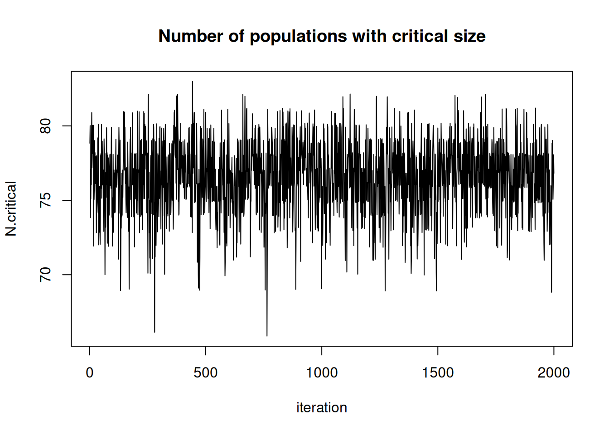

cat(file = "model2.txt","
model {
# Priors
for(k in 1:3){ # Loop over 3 levels of hab or time factors
alpha0[k] ~ dunif(-10, 10) # Detection intercepts
alpha1[k] ~ dunif(-10, 10) # Detection slopes
beta0[k] ~ dunif(-10, 10) # Abundance intercepts
beta1[k] ~ dunif(-10, 10) # Abundance slopes
}
# Likelihood
# Ecological model for true abundance
for (i in 1:M){
N[i] ~ dpois(lambda[i])
log(lambda[i]) <- beta0[hab[i]] + beta1[hab[i]] * vegHt[i]
# Some intermediate derived quantities
critical[i] <- step(2-N[i])# yields 1 whenever N is 2 or less
z[i] <- step(N[i]-0.5) # Indicator for occupied site
# Observation model for replicated counts
for (j in 1:J){
C[i,j] ~ dbin(p[i,j], N[i])
logit(p[i,j]) <- alpha0[j] + alpha1[j] * wind[i,j]
}
}
# Derived quantities
Nocc <- sum(z[]) # Number of occupied sites among sample of M
Ntotal <- sum(N[]) # Total population size at M sites combined
Nhab[1] <- sum(N[1:33]) # Total abundance for sites in hab A
Nhab[2] <- sum(N[34:66]) # Total abundance for sites in hab B
Nhab[3] <- sum(N[67:100])# Total abundance for sites in hab C
for(k in 1:100){ # Predictions of lambda and p ...
for(level in 1:3){ # ... for each level of hab and time factors
lam.pred[k, level] <- exp(beta0[level] + beta1[level] * XvegHt[k])
logit(p.pred[k, level]) <- alpha0[level] + alpha1[level] * Xwind[k]
}
}
N.critical <- sum(critical[]) # Number of populations with critical size
}")Quick guide for converting from JAGS or BUGS to NIMBLE
tutorial
R
Converting to NIMBLE from JAGS, OpenBUGS or WinBUGS
Converting to NIMBLE from JAGS, OpenBUGS or WinBUGS
NIMBLE is a hierarchical modeling package that uses nearly the same modeling language as the popular MCMC packages WinBUGS, OpenBUGS and JAGS. NIMBLE makes the modeling language extensible — you can add distributions and functions — and also allows customization of MCMC or other algorithms that use models. Here is a quick summary of steps to convert existing code from WinBUGS, OpenBUGS or JAGS to NIMBLE. For more information, see examples on r-nimble.org or the NIMBLE User Manual.
Main steps for converting existing code
These steps assume you are familiar with running WinBUGS, OpenBUGS or JAGS through an R package such as R2WinBUGS, R2jags, rjags, or jagsUI.
- Wrap your model code in
nimbleCode({}), directly in R.- This replaces the step of writing or generating a separate file containing the model code.
- Alternatively, you can read standard JAGS- and BUGS-formatted code and data files using
readBUGSmodel.
- Provide information about missing or empty indices
- Example: If
xis a matrix, you must write at leastx[,]to show it has two dimensions. - If other declarations make the size of
xclear,x[,]will work in some circumstances. - If not, either provide index ranges (e.g.
x[1:n, 1:m]) or use thedimensionsargument tonimbleModelto provide the sizes in each dimension.
- Example: If
- Choose how you want to run MCMC.
- Use
nimbleMCMC()as the just-do-it way to run an MCMC. This will take all steps to
set up and run an MCMC using NIMBLE’s default configuration. - To use NIMBLE’s full flexibility: build the model, configure and build the MCMC, and compile both the model and MCMC. Then run the MCMC via
runMCMCor by calling therunfunction of the compiled MCMC. See the NIMBLE User Manual to learn more about what you can do.
- Use
See below for a list of some more nitty-gritty additional steps you may need to consider for some models.
Example: An animal abundance model
This example is adapted from Chapter 6, Section 6.4 of Applied Hierarchical Modeling in Ecology: Analysis of distribution, abundance and species richness in R and BUGS. Volume I: Prelude and Static Models by Marc Kéry and J. Andrew Royle (2015, Academic Press). The book’s web site provides code for its examples.
Original code
The original model code looks like this:
Brief summary of the model
This is known as an “N-mixture” model in ecology. The details aren’t really important for illustrating the mechanics of converting this model to NIMBLE, but here is a brief summary anyway. The latent abundances N[i] at sites i = 1...M are assumed to follow a Poisson. The j-th count at the i-th site, C[i, j], is assumed to follow a binomial with detection probability p[i, j]. The abundance at each site depends on a habitat-specific intercept and coefficient for vegetation height, with a log link. The detection probability for each sampling occasion depends on a date-specific intercept and coefficient for wind speed. Kéry and Royle concocted this as a simulated example to illustrate the hierarchical modeling approaches for estimating abundance from count data on repeated visits to multiple sites.
NIMBLE version of the model code
Here is the model converted for use in NIMBLE. In this case, the only changes to the code are to insert some missing index ranges (see comments).
library(nimble)Section6p4_code <- nimbleCode({
# Priors
for(k in 1:3) { # Loop over 3 levels of hab or time factors
alpha0[k] ~ dunif(-10, 10) # Detection intercepts
alpha1[k] ~ dunif(-10, 10) # Detection slopes
beta0[k] ~ dunif(-10, 10) # Abundance intercepts
beta1[k] ~ dunif(-10, 10) # Abundance slopes
}
# Likelihood
# Ecological model for true abundance
for (i in 1:M){
N[i] ~ dpois(lambda[i])
log(lambda[i]) <- beta0[hab[i]] + beta1[hab[i]] * vegHt[i]
# Some intermediate derived quantities
critical[i] <- step(2-N[i])# yields 1 whenever N is 2 or less
z[i] <- step(N[i]-0.5) # Indicator for occupied site
# Observation model for replicated counts
for (j in 1:J){
C[i,j] ~ dbin(p[i,j], N[i])
logit(p[i,j]) <- alpha0[j] + alpha1[j] * wind[i,j]
}
}
# Derived quantities; unnececssary when running for inference purpose
# NIMBLE: We have filled in indices in the next two lines.
Nocc <- sum(z[1:100]) # Number of occupied sites among sample of M
Ntotal <- sum(N[1:100]) # Total population size at M sites combined
Nhab[1] <- sum(N[1:33]) # Total abundance for sites in hab A
Nhab[2] <- sum(N[34:66]) # Total abundance for sites in hab B
Nhab[3] <- sum(N[67:100])# Total abundance for sites in hab C
for(k in 1:100){ # Predictions of lambda and p ...
for(level in 1:3){ # ... for each level of hab and time factors
lam.pred[k, level] <- exp(beta0[level] + beta1[level] * XvegHt[k])
logit(p.pred[k, level]) <- alpha0[level] + alpha1[level] * Xwind[k]
}
}
# NIMBLE: We have filled in indices in the next line.
N.critical <- sum(critical[1:100]) # Number of populations with critical size
})Simulated data
To carry this example further, we need some simulated data. Kéry and Royle provide separate code to do this. With NIMBLE we could use the model itself to simulate data rather than writing separate simulation code. But for our goals here, we simply copy Kéry and Royle’s simulation code, and we compact it somewhat:
# Code from Kery and Royle (2015)
# Choose sample sizes and prepare obs. data array y
set.seed(1) # So we all get same data set
M <- 100 # Number of sites
J <- 3 # Number of repeated abundance measurements
C <- matrix(NA, nrow = M, ncol = J) # to contain the observed data
# Create a covariate called vegHt
vegHt <- sort(runif(M, -1, 1)) # sort for graphical convenience
# Choose parameter values for abundance model and compute lambda
beta0 <- 0 # Log-scale intercept
beta1 <- 2 # Log-scale slope for vegHt
lambda <- exp(beta0 + beta1 * vegHt) # Expected abundance
# Draw local abundance
N <- rpois(M, lambda)
# Create a covariate called wind
wind <- array(runif(M * J, -1, 1), dim = c(M, J))
# Choose parameter values for measurement error model and compute detectability
alpha0 <- -2 # Logit-scale intercept
alpha1 <- -3 # Logit-scale slope for wind
p <- plogis(alpha0 + alpha1 * wind) # Detection probability
# Take J = 3 abundance measurements at each site
for(j in 1:J) {
C[,j] <- rbinom(M, N, p[,j])
}
# Create factors
time <- matrix(rep(as.character(1:J), M), ncol = J, byrow = TRUE)
hab <- c(rep("A", 33), rep("B", 33), rep("C", 34)) # assumes M = 100
# Bundle data
# NIMBLE: For full flexibility, we could separate this list
# into constants and data lists. For simplicity we will keep
# it as one list to be provided as the "constants" argument.
# See comments about how we would split it if desired.
win.data <- list(
## NIMBLE: C is the actual data
C = C,
## NIMBLE: Covariates can be data or constants
## If they are data, you could modify them after the model is built
wind = wind,
vegHt = vegHt,
XvegHt = seq(-1, 1,, 100), # Used only for derived quantities
Xwind = seq(-1, 1,,100), # Used only for derived quantities
## NIMBLE: The rest of these are constants, needed for model definition
## We can provide them in the same list and NIMBLE will figure it out.
M = nrow(C),
J = ncol(C),
hab = as.numeric(factor(hab))
)Initial values
Next we need to set up initial values and choose parameters to monitor in the MCMC output. To do so we will again directly use Kéry and Royle’s code.
Nst <- apply(C, 1, max)+1 # Important to give good inits for latent N
inits <- function() list(N = Nst,
alpha0 = rnorm(3),
alpha1 = rnorm(3),
beta0 = rnorm(3),
beta1 = rnorm(3))
# Parameters monitored
# could also estimate N, bayesian counterpart to BUPs before: simply add "N" to the list
params <- c("alpha0", "alpha1", "beta0", "beta1", "Nocc", "Ntotal", "Nhab", "N.critical", "lam.pred", "p.pred")Run MCMC with nimbleMCMC
Now we are ready to run an MCMC in nimble. We will run only one chain, using the same settings as Kéry and Royle.
samples <- nimbleMCMC(
code = Section6p4_code,
constants = win.data, ## provide the combined data & constants as constants
inits = inits,
monitors = params,
niter = 22000,
nburnin = 2000,
thin = 10)Defining model [Note] Using 'C' (given within 'constants') as data.Building modelSetting data and initial valuesRunning calculate on model
[Note] Any error reports that follow may simply reflect missing values in model variables.Checking model sizes and dimensionsChecking model calculationsCompiling
[Note] This may take a minute.
[Note] Use 'showCompilerOutput = TRUE' to see C++ compilation details.running chain 1...|-------------|-------------|-------------|-------------|
|-------------------------------------------------------|Work with the samples
Finally we want to look at our samples. NIMBLE returns samples as a simple matrix with named columns. There are numerous packages for processing MCMC output. If you want to use the coda package, you can convert a matrix to a coda mcmc object like this:
library(coda)
Attaching package: 'coda'The following object is masked _by_ '.GlobalEnv':
densplotcoda.samples <- as.mcmc(samples)Alternatively, if you call nimbleMCMC with the argument samplesAsCodaMCMC = TRUE, the samples will be returned as a coda object.
To show that MCMC really happened, here is a plot of N.critical:
plot(jitter(samples[, "N.critical"]), xlab = "iteration", ylab = "N.critical",
main = "Number of populations with critical size",
type = "l")
Next steps
NIMBLE allows users to customize MCMC and other algorithms in many ways. See the NIMBLE User Manual and web site for more ideas.
Smaller steps you may need for converting existing code
If the main steps above aren’t sufficient, consider these additional steps when converting from JAGS, WinBUGS or OpenBUGS to NIMBLE.
- Convert any use of truncation syntax
- e.g.
x ~ dnorm(0, tau) T(a, b)should be re-written asx ~ T(dnorm(0, tau), a, b). - If reading model code from a file using
readBUGSmodel, thex ~ dnorm(0, tau) T(a, b)syntax will work.
- e.g.
- Possibly split the
dataintodataandconstantsfor NIMBLE.- NIMBLE has a more general concept of data, so NIMBLE makes a distinction between data and constants.
- Constants are necessary to define the model, such as
nsiteinfor(i in 1:nsite) {...}and constant vectors of factor indices (e.g.blockinmu[block[i]]). - Data are observed values of some variables.
- Alternatively, one can provide a list of both constants and data for the
constantsargument tonimbleModel, and NIMBLE will try to determine which is which. Usually this will work, but when in doubt, try separating them.
- Possibly update initial values (
inits).- In some cases, NIMBLE likes to have more complete
initsthan the other packages. - In a model with stochastic indices, those indices should have
initsvalues. - When using
nimbleMCMCorrunMCMC,initscan be a function, as in R packages for calling WinBUGS, OpenBUGS or JAGS. Alternatively, it can be a list. - When you build a model with
nimbleModelfor more control thannimbleMCMC, you can provideinitsas a list. This sets defaults that can be over-ridden with theinitsargument torunMCMC.
- In some cases, NIMBLE likes to have more complete